On paper, sketch a Cartesian coordinate system with units, and then plot the following points: \((3,2),(-5,-1),(0,-3),(4,0)\text{.}\)
Explanation.
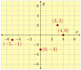
Figure3.10.2.A Cartesian grid with the four points plotted.
Subsection3.10.2Graphing Equations
In Section 2 we covered how to plot solutions to equations to produce a graph of the equation.
Example3.10.3.
Graph the equation \(y=-2x+5\text{.}\)
Explanation.
\(x\)
\(y=-2x+5\)
Point
\(-2\)
\(\phantom{-2(-2)+5=\substitute{9}}\)
\(\phantom{(-2,9)}\)
\(-1\)
\(\phantom{-2(-1)+5=\substitute{7}}\)
\(\phantom{(-1,7)}\)
\(0\)
\(\phantom{-2(0)+5=\substitute{5}}\)
\(\phantom{(0,5)}\)
\(1\)
\(\phantom{-2(1)+5=\substitute{3}}\)
\(\phantom{(1,3)}\)
\(2\)
\(\phantom{-2(2)+5=\substitute{1}}\)
\(\phantom{(2,1)}\)
(a)Set up the table
\(x\)
\(y=-2x+5\)
Point
\(-2\)
\(-2(-2)+5=\substitute{9}\)
\((-2,9)\)
\(-1\)
\(-2(-1)+5=\substitute{7}\)
\((-1,7)\)
\(0\)
\(-2(0)+5=\substitute{5}\)
\((0,5)\)
\(1\)
\(-2(1)+5=\substitute{3}\)
\((1,3)\)
\(2\)
\(-2(2)+5=\substitute{1}\)
\((2,1)\)
(b)Complete the table
Figure3.10.4.Making a table for \(y=-2x+5\)
We use points from the table to graph the equation. First, plot each point carefully. Then, connect the points with a smooth curve. Here, the curve is a straight line. Lastly, we can communicate that the graph extends further by sketching arrows on both ends of the line.
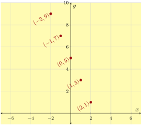
(a)Use points from the table
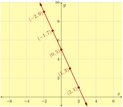
(b)Connect the points in whatever pattern is apparent
Figure3.10.5.Graphing the Equation \(y=-2x+5\)
Subsection3.10.3Exploring Two-Variable Data and Rate of Change
In Section 3 we covered how to find patterns in tables of data and how to calculate the rate of change between points in data.
Example3.10.6.
Write an equation in the form \(y=\ldots\) suggested by the pattern in the table.
\(x\)
\(y\)
\(0\)
\(-4\)
\(1\)
\(-6\)
\(2\)
\(-8\)
\(3\)
\(-10\)
Figure3.10.7.A table of linear data.
Explanation.
We consider how the values change from one row to the next. From row to row, the \(x\)-value increases by \(1\text{.}\) Also, the \(y\)-value decreases by \(2\) from row to row.
\(x\)
\(y\)
\(0\)
\(-4\)
\({}+1\rightarrow\)
\(1\)
\(-6\)
\(\leftarrow{}-2\)
\({}+1\rightarrow\)
\(2\)
\(-8\)
\(\leftarrow{}-2\)
\({}+1\rightarrow\)
\(3\)
\(-10\)
\(\leftarrow{}-2\)
Since row-to-row change is always \(1\) for \(x\) and is always \(-2\) for \(y\text{,}\) the rate of change from one row to another row is always the same: \(-2\) units of \(y\) for every \(1\) unit of \(x\text{.}\)
We know that the output for \(x = 0\) is \(y = -4\text{.}\) And our observation about the constant rate of change tells us that if we increase the input by \(x\) units from \(0\text{,}\) the output should decrease by \(\overbrace{(-2)+(-2)+\cdots+(-2)}^{x\text{ times}}\text{,}\) which is \(-2x\text{.}\) So the output would be \(-4-2x\text{.}\)
So the equation is \(y=-2x-4\text{.}\)
Subsection3.10.4Slope
In Section 4 we covered the definition of slope and how to use slope triangles to calculate slope. There is also the slope formula which helps find the slope through any two points.
Example3.10.8.
Find the slope of the line in the following graph.
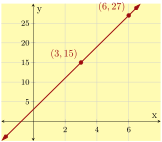
Figure3.10.9.The line with two points indicated.
Explanation.
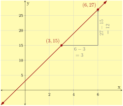
Figure3.10.10.The line with a slope triangle drawn.
We picked two points on the line, and then drew a slope triangle. Next, we will do:
In Section 5 we covered the definition of slope intercept-form and both wrote equations in slope-intercept form and graphed lines given in slope-intercept form.
Example3.10.12.
Graph the line \(y=-\frac{5}{2}x+4\text{.}\)
Explanation.
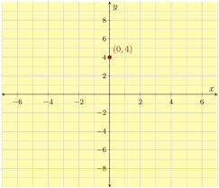
(a)First, plot the line’s \(y\)-intercept, \((0,4)\text{.}\)
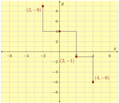
(b)The slope is \(-\frac{5}{2}=\frac{-5}{2}=\frac{5}{-2}\text{.}\) So we can try using a “run” of \(2\) and a “rise” of \(-5\) or a “run” of \(-2\) and a “rise” of \(5\text{.}\)
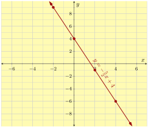
(c)Arrowheads and labels are encouraged.
Figure3.10.13.Graphing \(y=-\frac{5}{2}x+4\)
Writing a Line’s Equation in Slope-Intercept Form Based on Graph.
Given a line’s graph, we can identify its \(y\)-intercept, and then find its slope using a slope triangle. With a line’s slope and \(y\)-intercept, we can write its equation in the form of \(y=mx+b\text{.}\)
Example3.10.14.
Find the equation of the line in the graph.
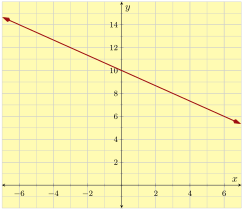
Figure3.10.15.Graph of a line
Explanation.
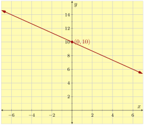
Figure3.10.16.Identify the line’s \(y\)-intercept, \(10\text{.}\)
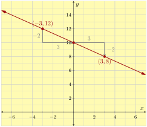
Figure3.10.17.Identify the line’s slope using a slope triangle. Note that we can pick any two points on the line to create a slope triangle. We would get the same slope: \(-\frac{2}{3}\)
With the line’s slope \(-\frac{2}{3}\) and \(y\)-intercept \(10\text{,}\) we can write the line’s equation in slope-intercept form: \(y=-\frac{2}{3}x+10\text{.}\)
Subsection3.10.6Point-Slope Form
In Section 6 we covered the definition of point-slope form and both wrote equations in point-slope form and graphed lines given in point-slope form.
Example3.10.18.
A line passes through \((-6,0)\) and \((9,-10)\text{.}\) Find this line’s equation in point-slope form. .
Explanation.
We will use the slope formula to find the slope first. After labeling those two points as \((\overset{x_1}{-6},\overset{y_1}{0}) \text{ and } (\overset{x_2}{9},\overset{y_2}{-10})\text{,}\) we have:
Now the point-slope equation looks like \(y=-\frac{2}{3}(x-x_0)+y_0\text{.}\) Next, we will use \((9,-10)\) and substitute \(x_0\) with \(9\) and \(y_0\) with \(-10\text{,}\) and we have:
In Section 7 we covered the definition of standard form of a linear equation. We converted equations from standard form to slope-intercept form and vice versa. We also graphed lines from standard form by finding the intercepts of the line.
The line’s equation in standard form is \(4x+7y=-21\text{.}\)
To graph a line in standard form, we could first change it to slope-intercept form, and then graph the line by its \(y\)-intercept and slope triangles. A second method is to graph the line by its \(x\)-intercept and \(y\)-intercept.
Example3.10.20.
Graph \(2x-3y=-6\) using its intercepts. And then use the intercepts to calculate the line’s slope.
Explanation.
We calculate the line’s \(x\)-intercept by substituting \(y=0\) into the equation
So the line’s \(y\)-intercept is \((0,2)\text{.}\)
With both intercepts’ coordinates, we can graph the line:
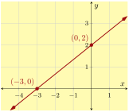
Figure3.10.21.Graph of \(2x-3y=-6\)
Now that we have graphed the line we can read the slope. The rise is \(2\) units and the run is \(3\) units so the slope is \(\frac{2}{3}\text{.}\)
Subsection3.10.8Horizontal, Vertical, Parallel, and Perpendicular Lines
In Section 8 we studied horizontal and vertical lines. We also covered the relationships between the slopes of parallel and perpendicular lines.
Example3.10.22.
Line \(m\)’s equation is \(y=-2x+20\text{.}\) Line \(n\) is parallel to \(m\text{,}\) and line \(n\) also passes the point \((4,-3)\text{.}\) Find an equation for line \(n\) in point-slope form.
Explanation.
Since parallel lines have the same slope, line \(n\)’s slope is also \(-2\text{.}\) Since line \(n\) also passes the point \((4,-3)\text{,}\) we can write line \(n\)’s equation in point-slope form:
Two lines are perpendicular if and only if the product of their slopes is \(-1\text{.}\)
Example3.10.23.
Line \(m\)’s equation is \(y=-2x+20\text{.}\) Line \(n\) is perpendicular to \(m\text{,}\) and line \(q\) also passes the point \((4,-3)\text{.}\) Find an equation for line \(q\) in slope-intercept form.
Explanation.
Since line \(m\) and \(q\) are perpendicular, the product of their slopes is \(-1\text{.}\) Because line \(m\)’s slope is given as \(-2\text{,}\) we can find line \(q\)’s slope is \(\frac{1}{2}\text{.}\)
Since line \(q\) also passes the point \((4,-3)\text{,}\) we can write line \(q\)’s equation in point-slope form:
Sketch the points \((8,2)\text{,}\)\((5,5)\text{,}\)\((-3,0)\text{,}\)\(\left(0,-\frac{14}{3}\right)\text{,}\)\((3,-2.5)\text{,}\) and \((-5,7)\) on a Cartesian plane.
Answer.
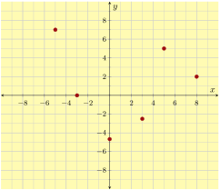
2.
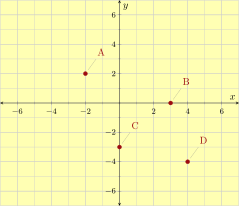
\(A={}\)\(B={}\)\(C={}\)\(D={}\)
Answer1.
\(\left(-2,2\right)\)
Answer2.
\(\left(3,0\right)\)
Answer3.
\(\left(0,-3\right)\)
Answer4.
\(\left(4,-4\right)\)
3.
Consider the equation
\(y=-\frac{3}{4} x-5\)
Which of the following ordered pairs are solutions to the given equation? There may be more than one correct answer.
\(\displaystyle (0,-5)\)
\(\displaystyle (-4,3)\)
\(\displaystyle (16,-12)\)
\(\displaystyle (-12,4)\)
Explanation.
We substitute in each ordered pair’s \(x\)- and \(y\)-values into the equation \(y=-\frac{3}{4} x-5\text{,}\) and see whether the resulting equation is true.
In two cases, \((-12,4)\) and \((0,-5)\text{,}\) we have true equations:
Which of the following ordered pairs are solutions to the given equation? There may be more than one correct answer.
\(\displaystyle (30,-28)\)
\(\displaystyle (-24,15)\)
\(\displaystyle (0,-5)\)
\(\displaystyle (-18,12)\)
Explanation.
We substitute in each ordered pair’s \(x\)- and \(y\)-values into the equation \(y=-\frac{5}{6} x-5\text{,}\) and see whether the resulting equation is true.
In two cases, \((-24,15)\) and \((0,-5)\text{,}\) we have true equations:
So \((30,-28)\) and \((-18,12)\) are not solutions.
5.
Write an equation in the form \(y=\ldots\) suggested by the pattern in the table.
\(x\)
\(y\)
\(0\)
\({-4}\)
\(1\)
\({-2}\)
\(2\)
\({0}\)
\(3\)
\({2}\)
Answer.
\(y = 2x-4\)
Explanation.
The relationship between \(x\) and \(y\) in each row is not as clear here. Another popular approach for finding patterns: in each column, consider how the values change from one row to the next. From row to row, the \(x\)-value increases by \(1\text{.}\) Also, the \(y\)-value increases by \(2\) from row to row.
\(x\)
\(y\)
\(0\)
\({-4}\)
\({}+1\rightarrow\)
\(1\)
\({-2}\)
\(\leftarrow{}+2\)
\({}+1\rightarrow\)
\(2\)
\({0}\)
\(\leftarrow{}+2\)
\({}+1\rightarrow\)
\(3\)
\({2}\)
\(\leftarrow{}+2\)
Since row-to-row change is always \(1\) for \(x\) and is always \(2\) for \(y\text{,}\) the rate of change from one row to another row is always the same: \(2\) units of \(y\) for every \(1\) unit of \(x\text{.}\)
We know that the output for \(x = 0\) is \(y = -4\text{.}\) And our observation about the constant rate of change tells us that if we increase the input by \(x\) units from \(0\text{,}\) the output should increase by \(\overbrace{(2)+(2)+\cdots+(2)}^{x\text{ times}}\text{,}\) which is \(2x\text{.}\) So the output would be \({-4+2x}\text{.}\)
So the equation is \({y = 2x-4}\text{.}\)
6.
Write an equation in the form \(y=\ldots\) suggested by the pattern in the table.
\(x\)
\(y\)
\(0\)
\({3}\)
\(1\)
\({-2}\)
\(2\)
\({-7}\)
\(3\)
\({-12}\)
Answer.
\(y = 3-5x\)
Explanation.
The relationship between \(x\) and \(y\) in each row is not as clear here. Another popular approach for finding patterns: in each column, consider how the values change from one row to the next. From row to row, the \(x\)-value increases by \(1\text{.}\) Also, the \(y\)-value decreases by \(5\) from row to row.
\(x\)
\(y\)
\(0\)
\({3}\)
\({}+1\rightarrow\)
\(1\)
\({-2}\)
\(\leftarrow{}-5\)
\({}+1\rightarrow\)
\(2\)
\({-7}\)
\(\leftarrow{}-5\)
\({}+1\rightarrow\)
\(3\)
\({-12}\)
\(\leftarrow{}-5\)
Since row-to-row change is always \(1\) for \(x\) and is always \(-5\) for \(y\text{,}\) the rate of change from one row to another row is always the same: \(-5\) units of \(y\) for every \(1\) unit of \(x\text{.}\)
We know that the output for \(x = 0\) is \(y = 3\text{.}\) And our observation about the constant rate of change tells us that if we increase the input by \(x\) units from \(0\text{,}\) the output should increase by \(\overbrace{(-5)+(-5)+\cdots+(-5)}^{x\text{ times}}\text{,}\) which is \(-5x\text{.}\) So the output would be \({3-5x}\text{.}\)
So the equation is \({y = 3-5x}\text{.}\)
Exercise Group.
7.
Find the slope of the line.
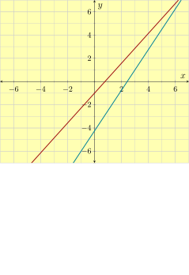
Answer.
\({\frac{9}{4}}\)
Explanation.
To find the slope of a line from its graph, we first need to identify two points that the line passes through. It is wise to choose points with integer coordinates. For this problem, we choose \((0,-3)\) and \((4,6)\text{.}\)
Next, we sketch a slope triangle and find the rise and run. In the sketch below, the rise is \(9\) and the run is \(4\text{.}\)
To find the slope of a line from its graph, we first need to identify two points that the line passes through. It is wise to choose points with integer coordinates. For this problem, we choose \((0,4)\) and \((7,7)\text{.}\)
Next, we sketch a slope triangle and find the rise and run. In the sketch below, the rise is \(3\) and the run is \(7\text{.}\)
To find the slope of a line from its graph, we first need to identify two points that the line passes through. It is wise to choose points with integer coordinates. For this problem, we choose \((0,-2)\) and \((5,1)\text{.}\)
Next, we sketch a slope triangle and find the rise and run. In the sketch below, the rise is \(3\) and the run is \(5\text{.}\)
To find the slope of a line from its graph, we first need to identify two points that the line passes through. It is wise to choose points with integer coordinates. For this problem, we choose \((0,2)\) and \((7,-1)\text{.}\)
Next, we sketch a slope triangle and find the rise and run. In the sketch below, the rise is \(-3\) and the run is \(7\text{.}\)
To find the slope of a line from its graph, we first need to identify two points that the line passes through. It is wise to choose points with integer coordinates. For this problem, we choose \((0,-1)\) and \((3,-5)\text{.}\)
Next, we sketch a slope triangle and find the rise and run. In the sketch below, the rise is \(-4\) and the run is \(3\text{.}\)
To find the slope of a line from its graph, we first need to identify two points that the line passes through. It is wise to choose points with integer coordinates. For this problem, we choose \((0,1)\) and \((4,-4)\text{.}\)
Next, we sketch a slope triangle and find the rise and run. In the sketch below, the rise is \(-5\) and the run is \(4\text{.}\)
Since we cannot divide by \(0\text{,}\) this line’s slope does not exist. This is a special line which is parallel to the \(y\)-axis; it is a vertical line.
So the line’s slope Does Not Exist.
18.
A line passes through the points \((-8,-5)\) and \((-8,1)\text{.}\) Find this line’s slope.
Answer.
\(\text{DNE}\hbox{ or }\text{NONE}\)
Explanation.
To find a line’s slope, we can use the slope formula:
Since we cannot divide by \(0\text{,}\) this line’s slope does not exist. This is a special line which is parallel to the \(y\)-axis; it is a vertical line.
So the line’s slope Does Not Exist.
19.
A line’s graph is given. What is this line’s slope-intercept equation?
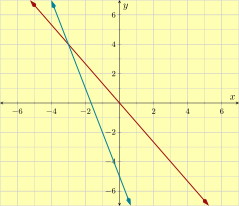
Answer.
\(y=-\frac{3}{8}x\)
Explanation.
A line’s slope-intercept equation has the form \(y=mx+b\text{,}\) where \(m\) is the slope and \(b\) is the \(y\)-coordinate of the \(y\)-intercept. We first find the slope.
To find the slope of a line from its graph, we identify two points, and then draw a slope triangle. It’s wise to choose points with integer coordinates. For this problem, we choose \((0,0)\) and \((8,-3)\text{.}\)
Next, we draw a slope triangle and find the "rise" and "run". In this problem, the rise is \(-3\) and the run is \(8\text{.}\)
It’s clear in the graph that this line’s \(y\)-intercept is \((0,0)\text{.}\)
So this line’s slope-intercept equation is \(y= -{\frac{3}{8}} x+ 0\text{.}\)
20.
A line’s graph is given. What is this line’s slope-intercept equation?
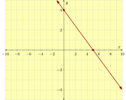
Answer.
\(y=-\frac{4}{5}x+4\)
Explanation.
A line’s slope-intercept equation has the form \(y=mx+b\text{,}\) where \(m\) is the slope and \(b\) is the \(y\)-coordinate of the \(y\)-intercept. We first find the slope.
To find the slope of a line from its graph, we identify two points, and then draw a slope triangle. It’s wise to choose points with integer coordinates. For this problem, we choose \((0,4)\) and \((5,0)\text{.}\)
Next, we draw a slope triangle and find the "rise" and "run". In this problem, the rise is \(-4\) and the run is \(5\text{.}\)
It’s clear in the graph that this line’s \(y\)-intercept is \((0,4)\text{.}\)
So this line’s slope-intercept equation is \(y= -{\frac{4}{5}} x+ 4\text{.}\)
21.
Find the line’s slope and \(y\)-intercept.
A line has equation \(\displaystyle{ 2x-5y=-10 }\text{.}\)
This line’s slope is .
This line’s \(y\)-intercept is .
Answer1.
\({\frac{2}{5}}\)
Answer2.
\(\left(0,2\right)\)
Explanation.
When an equation of a line is written in the form \(y=mx+b\text{,}\) it is said to be in slope-intercept form.
In this problem, the line’s equation is given in the standard form\(\displaystyle{ 2x-5y=-10 }\text{.}\) If we algebraically rearrange the equation from standard form to slope-intercept form \(y=mx+b\text{,}\) it will be easy to see the slope and \(y\)-intercept.
Now we can see the line’s slope is \(\displaystyle{ \frac{2}{5} }\text{,}\) and its \(y\)-intercept has coordinates \({\left(0,2\right)}\text{.}\)
22.
Find the line’s slope and \(y\)-intercept.
A line has equation \(\displaystyle{ 7x-6y=18 }\text{.}\)
This line’s slope is .
This line’s \(y\)-intercept is .
Answer1.
\({\frac{7}{6}}\)
Answer2.
\(\left(0,-3\right)\)
Explanation.
When an equation of a line is written in the form \(y=mx+b\text{,}\) it is said to be in slope-intercept form.
In this problem, the line’s equation is given in the standard form\(\displaystyle{ 7x-6y=18 }\text{.}\) If we algebraically rearrange the equation from standard form to slope-intercept form \(y=mx+b\text{,}\) it will be easy to see the slope and \(y\)-intercept.
A line’s equation in point-slope form looks like \(y=m(x-x_{0})+y_0\) where \(m\) is the slope of the line and \((x_{0},y_{0})\) is a point that the line passes through. We first need to find the line’s slope.
To find a line’s slope, we can use the slope formula:
Note that these two equations are equivalent. You will see why once you change both equations to slope-intercept form. This is left as an exercise.
24.
A line passes through the points \((7,{17})\) and \((-7,{1})\text{.}\) Find this line’s equation in point-slope form.
Using the point \((7,{17})\text{,}\) this line’s point-slope form equation is .
Using the point \((-7,{1})\text{,}\) this line’s point-slope form equation is .
Answer1.
\(y = \frac{8}{7}\mathopen{}\left(x-7\right)+17\)
Answer2.
\(y = \frac{8}{7}\mathopen{}\left(x+7\right)+1\)
Explanation.
A line’s equation in point-slope form looks like \(y=m(x-x_{0})+y_0\) where \(m\) is the slope of the line and \((x_{0},y_{0})\) is a point that the line passes through. We first need to find the line’s slope.
To find a line’s slope, we can use the slope formula:
Note that these two equations are equivalent. You will see why once you change both equations to slope-intercept form. This is left as an exercise.
25.
Scientists are conducting an experiment with a gas in a sealed container. The mass of the gas is measured, and the scientists realize that the gas is leaking over time in a linear way. Each minute, they lose \(7.6\) grams. Five minutes since the experiment started, the remaining gas had a mass of \(334.4\) grams.
Let \(x\) be the number of minutes that have passed since the experiment started, and let \(y\) be the mass of the gas in grams at that moment. Use a linear equation to model the weight of the gas over time.
This line’s slope-intercept equation is .
\(37\) minutes after the experiment started, there would be grams of gas left.
If a linear model continues to be accurate, minutes since the experiment started, all gas in the container will be gone.
Answer1.
\(y = -7.6x+372.4\)
Answer2.
\(91.2\)
Answer3.
\(49\)
Explanation.
A line’s equation in slope-intercept form looks like \(y=mx+b\text{,}\) where \(m\) is the slope, and \(y\) is the \(y\)-coordinate of the \(y\)-intercept. Since the gas is leaking at a rate of \(7.6\) grams per minute, we know that the slope of the linear model is \(-7.6\text{.}\)
So now we have that \(y=-7.6x+b\text{.}\) The next step is to find the value of \(b\text{.}\) There are at least two ways.
One way is to substitute a known point into \(y=-7.6x+b\text{.}\) We use the point \((5,334.4)\text{.}\)
\(\begin{aligned}
y \amp = -7.6x + b \\
334.4 \amp = -7.6 \cdot 5 + b \\
334.4 \amp = -38 + b \\
334.4\mathbf{{} + 38} \amp = -38 + b\mathbf{{} + 38} \\
372.4 \amp = b\\
b \amp = 372.4
\end{aligned}\)
This line’s slope-intercept equation is \(y=-7.6x+372.4\text{.}\)
Another way is to use the line’s point-slope equation \(y-y_{1}=m(x-x_{1})\text{.}\) Again, we use the point \((5,334.4)\text{.}\)
This is the second way to find \(b\text{,}\) and thus the line’s slope-intercept equation is \(y=-7.6x+372.4\text{.}\)
After \(37\) minutes, we can find the mass of the remaining gas if we substitute \(37\) in for \(x\) in the equation \(y=-7.6x+372.4\text{.}\) We have:
\(\displaystyle{\begin{aligned}
y \amp = -7.6x+372.4 \\
y \amp = -7.6 \cdot 37 +372.4 \\
y \amp = -281.2+372.4 \\
y \amp = 91.2
\end{aligned}
}\)
So after \(37\) minutes, there are \(91.2\) grams of gas remaining.
To find when the gas will be all gone, we need to find when there are \(0\) grams of gas left. We can substitute \(0\) in for \(y\) in the equation \(y=-7.6x+372.4\text{,}\) and we have:
So after \(49\) minutes, the gas will be all gone.
26.
Scientists are conducting an experiment with a gas in a sealed container. The mass of the gas is measured, and the scientists realize that the gas is leaking over time in a linear way. Each minute, they lose \(4.5\) grams. Seven minutes since the experiment started, the remaining gas had a mass of \(148.5\) grams.
Let \(x\) be the number of minutes that have passed since the experiment started, and let \(y\) be the mass of the gas in grams at that moment. Use a linear equation to model the weight of the gas over time.
This line’s slope-intercept equation is .
\(37\) minutes after the experiment started, there would be grams of gas left.
If a linear model continues to be accurate, minutes since the experiment started, all gas in the container will be gone.
Answer1.
\(y = -4.5x+180\)
Answer2.
\(13.5\)
Answer3.
\(40\)
Explanation.
A line’s equation in slope-intercept form looks like \(y=mx+b\text{,}\) where \(m\) is the slope, and \(y\) is the \(y\)-coordinate of the \(y\)-intercept. Since the gas is leaking at a rate of \(4.5\) grams per minute, we know that the slope of the linear model is \(-4.5\text{.}\)
So now we have that \(y=-4.5x+b\text{.}\) The next step is to find the value of \(b\text{.}\) There are at least two ways.
One way is to substitute a known point into \(y=-4.5x+b\text{.}\) We use the point \((7,148.5)\text{.}\)
\(\begin{aligned}
y \amp = -4.5x + b \\
148.5 \amp = -4.5 \cdot 7 + b \\
148.5 \amp = -31.5 + b \\
148.5\mathbf{{} + 31.5} \amp = -31.5 + b\mathbf{{} + 31.5} \\
180 \amp = b\\
b \amp = 180
\end{aligned}\)
This line’s slope-intercept equation is \(y=-4.5x+180\text{.}\)
Another way is to use the line’s point-slope equation \(y-y_{1}=m(x-x_{1})\text{.}\) Again, we use the point \((7,148.5)\text{.}\)
This is the second way to find \(b\text{,}\) and thus the line’s slope-intercept equation is \(y=-4.5x+180\text{.}\)
After \(37\) minutes, we can find the mass of the remaining gas if we substitute \(37\) in for \(x\) in the equation \(y=-4.5x+180\text{.}\) We have:
\(\displaystyle{\begin{aligned}
y \amp = -4.5x+180 \\
y \amp = -4.5 \cdot 37 +180 \\
y \amp = -166.5+180 \\
y \amp = 13.5
\end{aligned}
}\)
So after \(37\) minutes, there are \(13.5\) grams of gas remaining.
To find when the gas will be all gone, we need to find when there are \(0\) grams of gas left. We can substitute \(0\) in for \(y\) in the equation \(y=-4.5x+180\text{,}\) and we have:
So after \(40\) minutes, the gas will be all gone.
27.
Find the \(y\)-intercept and \(x\)-intercept of the line given by the equation. If a particular intercept does not exist, enter none into all the answer blanks for that row.
\begin{equation*}
2 x + 3 y = -18
\end{equation*}
\(x\)-value
\(y\)-value
Location (as an ordered pair)
\(y\)-intercept
\(x\)-intercept
\(x\)-intercept and \(y\)-intercept of the line \(2 x+3 y=-18\)
Answer1.
\(0\)
Answer2.
\(-6\)
Answer3.
\(\left(0,-6\right)\)
Answer4.
\(-9\)
Answer5.
\(0\)
Answer6.
\(\left(-9,0\right)\)
Explanation.
A line’s \(y\)-intercept is on the \(y\)-axis, implying that its \(x\)-value must be \(0\text{.}\) To find a line’s \(y\)-intercept, we substitute in \(x=0\text{.}\) In this problem we have:
\begin{equation*}
\begin{aligned}
2 x+3 y \amp = -18\\
2 (0)+3 y \amp = -18\\
3 y \amp = -18 \\
\frac{3 y}{3} \amp = \frac{-18}{3}\\
y \amp = -6
\end{aligned}
\end{equation*}
This line’s \(y\)-intercept is \((0,-6)\text{.}\)
Next, a line’s \(x\)-intercept is on the \(x\)-axis, implying that its \(y\)-value must be \(0\text{.}\) To find a line’s \(x\)-intercept, we substitute in \(y=0\text{.}\) In this problem we have:
\begin{equation*}
\begin{aligned}
2 x+3 y \amp = -18\\
2 x+3 (0) \amp = -18\\
2 x \amp = -18\\
\frac{2 x}{2} \amp = \frac{-18}{2}\\
x \amp = -9
\end{aligned}
\end{equation*}
The line’s \(x\)-intercept is \((-9,0)\text{.}\)
The entries for the table are:
\(x\)-value
\(y\)-value
Location
\(y\)-intercept
\(0\)
\(-6\)
\((0,-6)\)
\(x\)-intercept
\(-9\)
\(0\)
\((-9,0)\)
\(x\)-intercept and \(y\)-intercept of the line \(2 x+3 y=-18\)
28.
Find the \(y\)-intercept and \(x\)-intercept of the line given by the equation. If a particular intercept does not exist, enter none into all the answer blanks for that row.
\begin{equation*}
2 x + 7 y = -14
\end{equation*}
\(x\)-value
\(y\)-value
Location (as an ordered pair)
\(y\)-intercept
\(x\)-intercept
\(x\)-intercept and \(y\)-intercept of the line \(2 x+7 y=-14\)
Answer1.
\(0\)
Answer2.
\(-2\)
Answer3.
\(\left(0,-2\right)\)
Answer4.
\(-7\)
Answer5.
\(0\)
Answer6.
\(\left(-7,0\right)\)
Explanation.
A line’s \(y\)-intercept is on the \(y\)-axis, implying that its \(x\)-value must be \(0\text{.}\) To find a line’s \(y\)-intercept, we substitute in \(x=0\text{.}\) In this problem we have:
\begin{equation*}
\begin{aligned}
2 x+7 y \amp = -14\\
2 (0)+7 y \amp = -14\\
7 y \amp = -14 \\
\frac{7 y}{7} \amp = \frac{-14}{7}\\
y \amp = -2
\end{aligned}
\end{equation*}
This line’s \(y\)-intercept is \((0,-2)\text{.}\)
Next, a line’s \(x\)-intercept is on the \(x\)-axis, implying that its \(y\)-value must be \(0\text{.}\) To find a line’s \(x\)-intercept, we substitute in \(y=0\text{.}\) In this problem we have:
\begin{equation*}
\begin{aligned}
2 x+7 y \amp = -14\\
2 x+7 (0) \amp = -14\\
2 x \amp = -14\\
\frac{2 x}{2} \amp = \frac{-14}{2}\\
x \amp = -7
\end{aligned}
\end{equation*}
The line’s \(x\)-intercept is \((-7,0)\text{.}\)
The entries for the table are:
\(x\)-value
\(y\)-value
Location
\(y\)-intercept
\(0\)
\(-2\)
\((0,-2)\)
\(x\)-intercept
\(-7\)
\(0\)
\((-7,0)\)
\(x\)-intercept and \(y\)-intercept of the line \(2 x+7 y=-14\)
Exercise Group.
29.
Find the line’s slope and \(y\)-intercept.
A line has equation \(\displaystyle{ -{5}x+y= -3 }\text{.}\)
This line’s slope is .
This line’s \(y\)-intercept is .
Answer1.
\(5\)
Answer2.
\(\left(0,-3\right)\)
Explanation.
When an equation of a line is written in the form \(y=mx+b\text{,}\) it is said to be in slope-intercept form. In this form, \(m\) is the line’s slope, and \(b\) is the coordinate on the \(y\)-axis where the line intercepts the \(y\)-axis.
In this problem, the line’s equation is given as \(\displaystyle{ -{5}x+y= -3 }\text{.}\) It would be helpful to algebraically rearrange this into slope-intercept form: \(y= mx+b\text{.}\)
Now we can see the line’s slope is \({5}\text{,}\) and its \(y\)-intercept has coordinates \((0,-3)\text{.}\)
30.
Find the line’s slope and \(y\)-intercept.
A line has equation \(\displaystyle{ -x-y= -1 }\text{.}\)
This line’s slope is .
This line’s \(y\)-intercept is .
Answer1.
\(-1\)
Answer2.
\(\left(0,-\left(-1\right)\right)\)
Explanation.
When an equation of a line is written in the form \(y=mx+b\text{,}\) it is said to be in slope-intercept form. In this form, \(m\) is the line’s slope, and \(b\) is the coordinate on the \(y\)-axis where the line intercepts the \(y\)-axis.
In this problem, the line’s equation is given as \(\displaystyle{ -x-y= -1 }\text{.}\) It would be helpful to algebraically rearrange this into slope-intercept form: \(y= mx+b\text{.}\)
Now we can see the line’s slope is \({-1}\text{,}\) and its \(y\)-intercept has coordinates \({\left(0,1\right)}\text{.}\)
31.
Find the line’s slope and \(y\)-intercept.
A line has equation \(\displaystyle{ 12x+15y=4 }\text{.}\)
This line’s slope is .
This line’s \(y\)-intercept is .
Answer1.
\(-{\frac{4}{5}}\)
Answer2.
\(\left(0,\frac{4}{15}\right)\)
Explanation.
When an equation of a line is written in the form \(y=mx+b\text{,}\) it is said to be in slope-intercept form.
In this problem, the line’s equation is given in the standard form\(\displaystyle{ 12x+15y=4 }\text{.}\) If we algebraically rearrange the equation from standard form to slope-intercept form \(y=mx+b\text{,}\) it will be easy to see the slope and \(y\)-intercept.
Now we can see the line’s slope is \(-\frac{4}{5}\text{,}\) and its \(y\)-intercept has coordinates \(\left(0,\frac{4}{15}\right)\text{.}\)
32.
Find the line’s slope and \(y\)-intercept.
A line has equation \(\displaystyle{ 20x+12y=5 }\text{.}\)
This line’s slope is .
This line’s \(y\)-intercept is .
Answer1.
\(-{\frac{5}{3}}\)
Answer2.
\(\left(0,\frac{5}{12}\right)\)
Explanation.
When an equation of a line is written in the form \(y=mx+b\text{,}\) it is said to be in slope-intercept form.
In this problem, the line’s equation is given in the standard form\(\displaystyle{ 20x+12y=5 }\text{.}\) If we algebraically rearrange the equation from standard form to slope-intercept form \(y=mx+b\text{,}\) it will be easy to see the slope and \(y\)-intercept.
Now we can see the line’s slope is \(-\frac{5}{3}\text{,}\) and its \(y\)-intercept has coordinates \(\left(0,\frac{5}{12}\right)\text{.}\)
33.
Fill out this table for the equation \(x=-3\text{.}\) The first row is an example.
\(x\)
\(y\)
Points
\(-3\)
\(-3\)
\(\left(-3,-3\right)\)
\(-2\)
\(-1\)
\(0\)
\(1\)
\(2\)
Values of \(x\) and \(y\) satisfying the equation \(x=-3\)
Answer1.
\(-3\)
Answer2.
\(\left(-3,-2\right)\)
Answer3.
\(-3\)
Answer4.
\(\left(-3,-1\right)\)
Answer5.
\(-3\)
Answer6.
\(\left(-3,0\right)\)
Answer7.
\(-3\)
Answer8.
\(\left(-3,1\right)\)
Answer9.
\(-3\)
Answer10.
\(\left(-3,2\right)\)
Explanation.
\(x\)
\(y\)
Points
\(-3\)
\(-2\)
\(\left(-3,-2\right)\)
\(-3\)
\(-1\)
\(\left(-3,-1\right)\)
\(-3\)
\(0\)
\(\left(-3,0\right)\)
\(-3\)
\(1\)
\(\left(-3,1\right)\)
\(-3\)
\(2\)
\(\left(-3,2\right)\)
Values of \(x\) and \(y\) satisfying the equation \(x=-3\)
34.
Fill out this table for the equation \(x=-1\text{.}\) The first row is an example.
\(x\)
\(y\)
Points
\(-1\)
\(-3\)
\(\left(-1,-3\right)\)
\(-2\)
\(-1\)
\(0\)
\(1\)
\(2\)
Values of \(x\) and \(y\) satisfying the equation \(x=-1\)
Answer1.
\(-1\)
Answer2.
\(\left(-1,-2\right)\)
Answer3.
\(-1\)
Answer4.
\(\left(-1,-1\right)\)
Answer5.
\(-1\)
Answer6.
\(\left(-1,0\right)\)
Answer7.
\(-1\)
Answer8.
\(\left(-1,1\right)\)
Answer9.
\(-1\)
Answer10.
\(\left(-1,2\right)\)
Explanation.
\(x\)
\(y\)
Points
\(-1\)
\(-2\)
\(\left(-1,-2\right)\)
\(-1\)
\(-1\)
\(\left(-1,-1\right)\)
\(-1\)
\(0\)
\(\left(-1,0\right)\)
\(-1\)
\(1\)
\(\left(-1,1\right)\)
\(-1\)
\(2\)
\(\left(-1,2\right)\)
Values of \(x\) and \(y\) satisfying the equation \(x=-1\)
35.
A line’s graph is shown. Write an equation for the line.
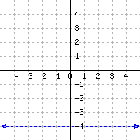
Answer.
\(y = -4\)
Explanation.
This line is horizontal, passing \((0,-4)\) and \((1,-4)\text{.}\) This implies its slope is \(0\text{.}\)
If a line’s slope is \(0\text{,}\) its equation has the form \(y=b\text{.}\) By the graph, we can see that its \(y\)-intercept is \(-4\text{,}\) so this line’s equation is \(y=-4\text{.}\)
36.
A line’s graph is shown. Write an equation for the line.
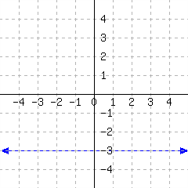
Answer.
\(y = -3\)
Explanation.
This line is horizontal, passing \((0,-3)\) and \((1,-3)\text{.}\) This implies its slope is \(0\text{.}\)
If a line’s slope is \(0\text{,}\) its equation has the form \(y=b\text{.}\) By the graph, we can see that its \(y\)-intercept is \(-3\text{,}\) so this line’s equation is \(y=-3\text{.}\)
37.
Line \(m\) passes points \((-6,1)\) and \((-6,-10)\text{.}\)
Line \(n\) passes points \((0,-2)\) and \((0,8)\text{.}\)
These two lines are .
Answer.
\(\text{parallel}\)
Explanation.
To find a line’s slope, we can use the slope formula:
When two lines are perpendicular, the product of their slopes is \(-1\text{.}\) It’s given that line \(k\)’s slope is \({{\frac{5}{8}}}\text{.}\) So the slope of \(\ell\) must be \({-{\frac{8}{5}}}\text{.}\)
Now we know line \(\ell\)’s slope, and a point on it: \((-3,{{\frac{19}{5}}})\text{.}\) We substitute these numbers into the generic formula for a point-slope equation for a line:
The slope-intercept form of a line equation looks like \(y=mx+b\text{,}\) where \(m\) is the slope and \(b\) is the \(y\)-intercept. We can take the point-slope form and expand and simplify the right side.
\(\displaystyle{\begin{aligned}
y \amp = {-{\frac{8}{5}}\mathopen{}\left(x+3\right)+{\frac{19}{5}}}\\
y \amp = {-{\frac{8}{5}}}x - {-{\frac{8}{5}}}(-3) +{{\frac{19}{5}}}\\
y \amp = {-{\frac{8}{5}}x-1}
\end{aligned}
}\)
40.
Line \(k\)’s equation is \(y={{\frac{6}{5}}x-4}\text{.}\)
Line \(\ell\) is perpendicular to line \(k\) and passes through the point \((-2,{{\frac{20}{3}}})\text{.}\)
Find an equation for line \(\ell\) in both point-slope form and slope-intercept form.
An equation for \(\ell\) in point-slope form is: .
An equation for \(\ell\) in slope-intercept form is: .
When two lines are perpendicular, the product of their slopes is \(-1\text{.}\) It’s given that line \(k\)’s slope is \({{\frac{6}{5}}}\text{.}\) So the slope of \(\ell\) must be \({-{\frac{5}{6}}}\text{.}\)
Now we know line \(\ell\)’s slope, and a point on it: \((-2,{{\frac{20}{3}}})\text{.}\) We substitute these numbers into the generic formula for a point-slope equation for a line:
The slope-intercept form of a line equation looks like \(y=mx+b\text{,}\) where \(m\) is the slope and \(b\) is the \(y\)-intercept. We can take the point-slope form and expand and simplify the right side.
\(\displaystyle{\begin{aligned}
y \amp = {-{\frac{5}{6}}\mathopen{}\left(x+2\right)+{\frac{20}{3}}}\\
y \amp = {-{\frac{5}{6}}}x - {-{\frac{5}{6}}}(-2) +{{\frac{20}{3}}}\\
y \amp = {-{\frac{5}{6}}x+5}
\end{aligned}
}\)
41.
Graph the linear inequality \(y\gt \frac{4}{3}x+1\text{.}\)
Answer.
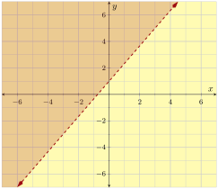
42.
Graph the linear inequality \(y\leq -\frac{1}{2}x-3\text{.}\)
Answer.
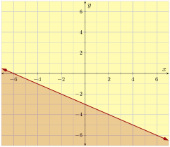
43.
Graph the linear inequality \(y\geq 3\text{.}\)
Answer.
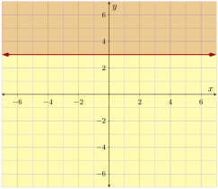
44.
Graph the linear inequality \(3x+2y\lt -6\text{.}\)